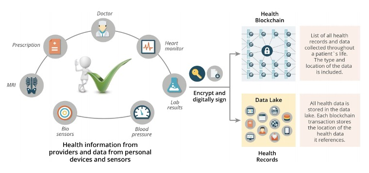

Blockchain: Poised to Revolutionize Personal Health Management
 Office of the National Coordinator for Health Information Technology
Blockchain technology, widely known for its applications in cryptocurrency, is experiencing a paradigm shift, moving beyond financial transactions to personal and social applications. This transition is particularly evident in the healthcare sector, where blockchain’s potential to transform health data management is gaining traction.
Health Data Accessibility and Security
One of the primary applications of Blockchain in healthcare is enhancing access to personal health data. Currently, many individuals face challenges in accessing their health records, which are often scattered across various systems and formats. Blockchain offers a solution by enabling the secure, encrypted storage of health information that is portable and accessible anywhere via a smartphone. This ensures that critical data such as vaccination records, lab results, blood pressure readings, BMI, and allergies are available at the fingertips of patients and healthcare providers.
Empowering Patients
Blockchain technology empowers patients by giving them control over their own health data. Through a decentralized and transparent system, patients can proactively manage their health, similar to how they manage their finances. This empowerment increases patient engagement, as individuals become active participants in their healthcare journey. By having access to comprehensive health data, patients can make informed decisions, track their health metrics, and engage in preventive care models that improve overall health outcomes.
Benefits for Healthcare Providers and Partners
Healthcare providers also stand to benefit significantly from Blockchain technology. Digital solutions facilitated by blockchain can streamline provider workflows, enhance efficiencies, and save time and money. The transparency of Blockchain transactions ensures that all parties, including patients, providers, and partners, have a clear and accurate view of health records. This reduces administrative burdens, minimizes errors, and fosters trust within the healthcare ecosystem.
Enhancing Healthcare with Blockchain
The integration of Blockchain in healthcare goes beyond individual benefits; it has the potential to improve public health through initiatives like contact tracing and community health monitoring. By securely capturing and sharing Social Determinants of Health (SDoH) data via community health workers, Blockchain can address broader health issues and facilitate targeted interventions to improve access and outcomes.
Conclusion
In conclusion, Blockchain technology is poised to revolutionize personal health management by providing secure, accessible, and comprehensive health data. Its application in healthcare not only empowers patients but also enhances the efficiency and effectiveness of healthcare providers and systems. As Blockchain continues to evolve, its impact on personal and social applications, particularly in health, will likely expand, offering new opportunities for innovation and improvement in healthcare delivery.